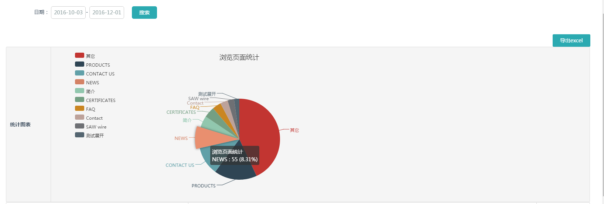
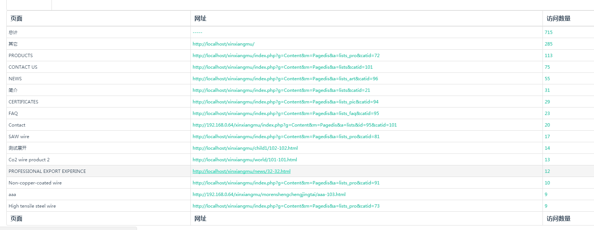
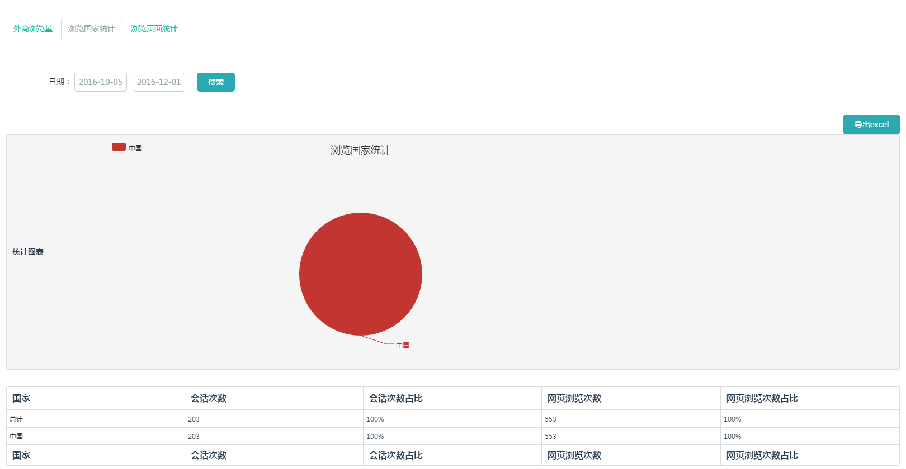

网站上线之后，可以查看网站每天，几天，几月的数据，可以选择具体的时间段，如下图，进行选择
图标最多显示10各模块，按照页面的浏览比例，显示最高的九个页面访问比例次数，鼠标放到任何模块上，都会看到具体的数据，比如圆饼图中news页面浏览次数为55，共占总访问量的8.31%。
表格显示每个页面以及具体网址的访问数量
从网站上线之后，都可以查看网站每天，几天，几月的数据，可以选择具体的时间段，可看到每个地区访客的具体数据，以及占的比例。